About
This vignette shows the results of a simulation-based calibration
(SBC) checking study to validate the implementation of the models in
brms.mmrm. SBC checking tests the ability of a Bayesian
model to recapture the parameters used to simulate prior predictive
data. For details on SBC checking, please read Modrák et al. (2024) and the SBC R package
(Kim et al. 2022). This particular SBC
checking study uses the targets
pipeline in the viggnettes/sbc/
subdirectory of the brms.mmrm
package source code.
Conclusion
From the results below, the SBC rank statistics are approximately
uniformly distributed. In other words, the posterior distribution from
the brms/Stan MMRM modeling code matches the prior from
which the datasets were simulated. This is evidence that both the
subgroup and non-subgroup models in brms.mmrm are
implemented correctly.
Setup
To show the SBC checking results in this vignette, we first load code from the SBC checking study, and we use custom functions to read and plot rank statistics:
library(dplyr)
library(ggplot2)
library(tibble)
library(tidyr)
source("sbc/R/prior.R")
source("sbc/R/response.R")
source("sbc/R/scenarios.R")
read_ranks <- function(path) {
fst::read_fst(path) |>
tibble::as_tibble() |>
pivot_longer(
cols = everything(),
names_to = "parameter",
values_to = "rank"
)
}
plot_ranks <- function(ranks) {
ggplot(ranks) +
geom_histogram(
aes(x = rank),
breaks = seq(from = 0, to = max(ranks$rank), length.out = 10)
) +
facet_wrap(~parameter)
}Each section below is its own SBC checking study based on a given modeling scenario. Each scenario shows results from 1000 independent simulations from the prior.
Subgroup scenario
The subgroup scenario distinguishes itself from the others by the presence of a subgroup factor. Assumptions:
- 2 treatment groups
- 2 subgroup levels
- 3 time points
- 150 patients per treatment group
- Baseline covariates (2 continuous and 2 categorical)
- 30% dropout
- 8% rate of independent/sporadic missing response.
Model formula:
#> response ~ group + group:subgroup + group:subgroup:time + group:time + subgroup + subgroup:time + time + continuous1 + continuous2 + balanced + unbalanced + unstr(time = time, gr = patient)
#> sigma ~ 0 + timeThe prior was randomly generated and used for both simulation and analysis:
setup_prior(subgroup) |>
select(prior, class, coef, dpar) |>
as.data.frame()
#> prior class coef
#> 2 normal(-0.1736, 0.6054) b balancedlevel2
#> 3 normal(-0.0447, 0.855) b balancedlevel3
#> 4 normal(0.0406, 0.5496) b continuous1
#> 5 normal(-0.0324, 0.7433) b continuous2
#> 6 normal(-0.0181, 2.3641) b groupgroup_2
#> 7 normal(0.2398, 1.451) b groupgroup_2:subgroupsubgroup_2
#> 8 normal(-0.0082, 2.7447) b groupgroup_2:subgroupsubgroup_2:timetime_2
#> 9 normal(-0.1206, 0.9984) b groupgroup_2:subgroupsubgroup_2:timetime_3
#> 10 normal(0.0883, 2.7254) b groupgroup_2:timetime_2
#> 11 normal(0.0347, 0.3068) b groupgroup_2:timetime_3
#> 12 normal(0.1064, 2.8303) b subgroupsubgroup_2
#> 13 normal(0.1894, 1.2434) b subgroupsubgroup_2:timetime_2
#> 14 normal(-0.0294, 1.0162) b subgroupsubgroup_2:timetime_3
#> 15 normal(0.0649, 2.0052) b timetime_2
#> 16 normal(0.0826, 1.9545) b timetime_3
#> 17 normal(0.0491, 1.3319) b unbalancedlevel2
#> 18 normal(-0.156, 1.255) b unbalancedlevel3
#> 19 lkj(1.3461) cortime
#> 20 normal(0.088, 2.6479) Intercept
#> 22 normal(0.0879, 2.8273) b timetime_1
#> 23 normal(0.2299, 2.2228) b timetime_2
#> 24 normal(0.0095, 2.2667) b timetime_3
#> dpar
#> 2
#> 3
#> 4
#> 5
#> 6
#> 7
#> 8
#> 9
#> 10
#> 11
#> 12
#> 13
#> 14
#> 15
#> 16
#> 17
#> 18
#> 19
#> 20
#> 22 sigma
#> 23 sigma
#> 24 sigmaThe following histograms show the SBC rank statistics which compare the prior parameter draws draws to the posterior draws. If the data simulation code and modeling code are both correct and consistent, then the rank statistics should be uniformly distributed.
ranks_subgroup <- read_ranks("sbc/results/subgroup.fst")Fixed effect parameter ranks:
ranks_subgroup |>
filter(grepl("^b_", parameter)) |>
filter(!grepl("^b_sigma", parameter)) |>
plot_ranks()
Standard deviation parameter ranks:

Correlation parameter ranks:

Unstructured scenario
This scenario uses unstructured correlation and does not use a subgroup variable. Assumptions:
- 3 treatment groups
- No subgroup
- 4 time points
- 100 patients per treatment group
- No covariate adjustment
- No missing responses
Model formula:
#> response ~ 0 + group + time + unstr(time = time, gr = patient)
#> sigma ~ 0 + timeThe prior was randomly generated and used for both simulation and analysis:
setup_prior(unstructured) |>
select(prior, class, coef, dpar) |>
as.data.frame()
#> prior class coef dpar
#> 2 normal(-0.1005, 1.6313) b groupgroup_1
#> 3 normal(0.2389, 0.4785) b groupgroup_2
#> 4 normal(-0.1541, 1.2388) b groupgroup_3
#> 5 normal(-0.0835, 2.2302) b timetime_2
#> 6 normal(-0.0266, 1.9245) b timetime_3
#> 7 normal(-0.1762, 2.2366) b timetime_4
#> 8 lkj(1.1812) cortime
#> 10 normal(-0.0388, 2.5623) b timetime_1 sigma
#> 11 normal(0.1653, 2.7346) b timetime_2 sigma
#> 12 normal(0.0359, 2.3959) b timetime_3 sigma
#> 13 normal(0.127, 2.5864) b timetime_4 sigmaSBC checking rank statistics:
ranks_unstructured <- read_ranks("sbc/results/unstructured.fst")Fixed effect parameter ranks:
ranks_unstructured |>
filter(grepl("^b_", parameter)) |>
filter(!grepl("^b_sigma", parameter)) |>
plot_ranks() Log-scale standard deviation parameter ranks:
Log-scale standard deviation parameter ranks:

Correlation parameter ranks:

Autoregressive moving average scenario
This scenario uses an autoregressive moving average (ARMA) model with autoregressive order 1 and moving average order 1. Assumptions:
- 2 treatment groups
- No subgroup
- 4 time points
- 50 patients per treatment group
- No covariate adjustment
- No missing responses
Model formula:
#> response ~ 0 + group + time + arma(time = time, gr = patient, p = 1L, q = 1L, cov = FALSE)
#> sigma ~ 0 + timeThe prior was randomly generated and used for both simulation and analysis:
setup_prior(autoregressive_moving_average) |>
select(prior, class, coef, dpar) |>
as.data.frame()
#> prior class coef dpar
#> 1 uniform(0.1, 0.9) ar
#> 3 normal(0.1737, 0.3985) b groupgroup_1
#> 4 normal(-0.1215, 2.1487) b groupgroup_2
#> 5 normal(-0.0756, 2.4499) b timetime_2
#> 6 normal(-0.0672, 1.454) b timetime_3
#> 7 normal(0.0282, 1.8807) b timetime_4
#> 8 uniform(0.1, 0.9) ma
#> 10 normal(0.101, 1.5519) b timetime_1 sigma
#> 11 normal(0.0335, 0.6042) b timetime_2 sigma
#> 12 normal(-0.0257, 1.3542) b timetime_3 sigma
#> 13 normal(-0.0404, 1.5114) b timetime_4 sigmaSBC checking rank statistics:
ranks_autoregressive_moving_average <- read_ranks(
"sbc/results/autoregressive_moving_average.fst"
)Fixed effect parameter ranks:
ranks_autoregressive_moving_average |>
filter(grepl("^b_", parameter)) |>
filter(!grepl("^b_sigma", parameter)) |>
plot_ranks()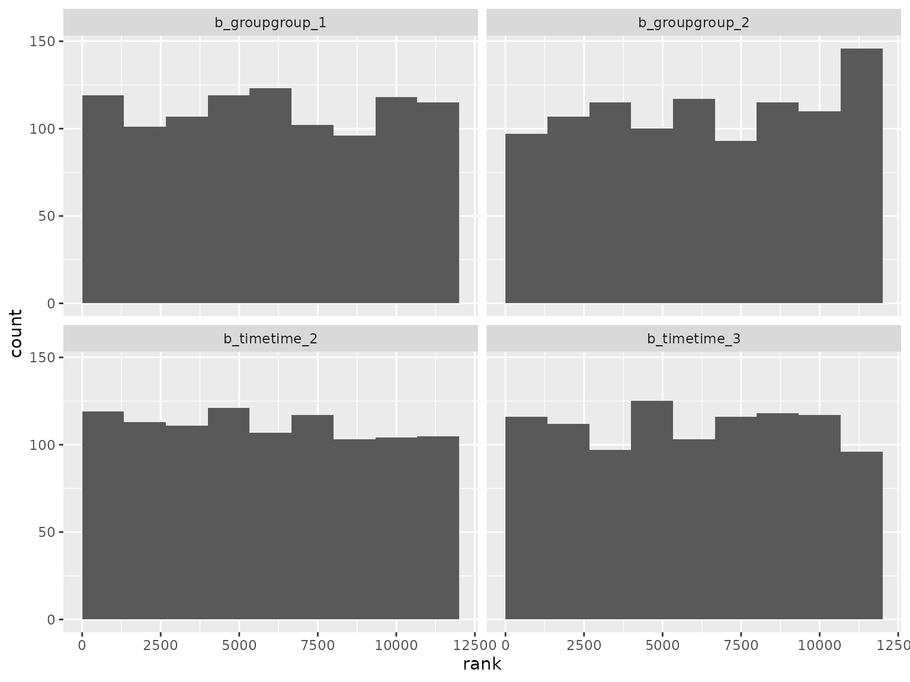
Log-scale standard deviation parameter ranks:
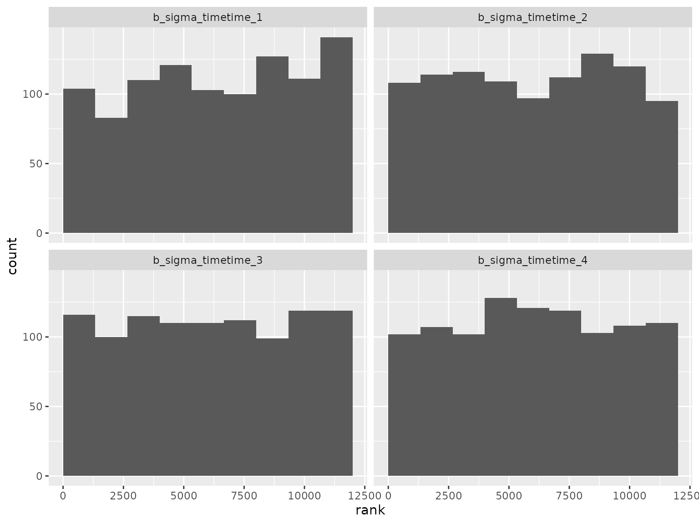
Correlation parameter ranks:
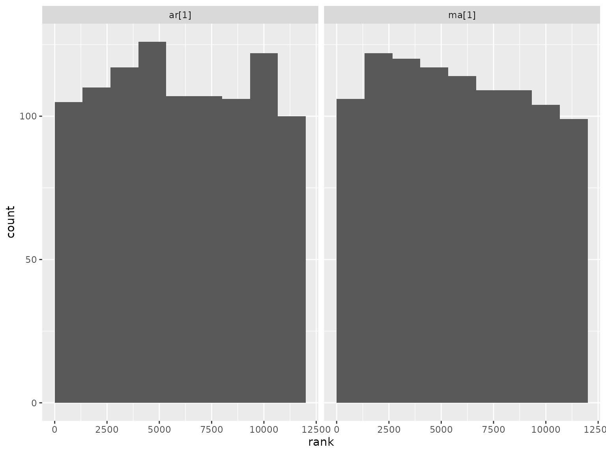
Autoregressive scenario
This scenario is the same as above, but the correlation structure is autoregressive with order 2. Model formula:
#> response ~ 0 + group + time + ar(time = time, gr = patient, p = 2L, cov = FALSE)
#> sigma ~ 0 + timeThe prior was randomly generated and used for both simulation and analysis:
setup_prior(autoregressive) |>
select(prior, class, coef, dpar) |>
as.data.frame()
#> prior class coef dpar
#> 1 uniform(0.1, 0.9) ar
#> 3 normal(0.1645, 1.6844) b groupgroup_1
#> 4 normal(-0.1432, 0.3371) b groupgroup_2
#> 5 normal(0.1859, 2.9435) b timetime_2
#> 6 normal(0.064, 2.2678) b timetime_3
#> 7 normal(-0.0904, 1.322) b timetime_4
#> 9 normal(0.135, 1.0282) b timetime_1 sigma
#> 10 normal(0.1832, 1.1802) b timetime_2 sigma
#> 11 normal(0.231, 2.435) b timetime_3 sigma
#> 12 normal(-0.0214, 1.3086) b timetime_4 sigmaSBC checking rank statistics:
ranks_autoregressive <- read_ranks("sbc/results/autoregressive.fst")Fixed effect parameter ranks:
ranks_autoregressive |>
filter(grepl("^b_", parameter)) |>
filter(!grepl("^b_sigma", parameter)) |>
plot_ranks()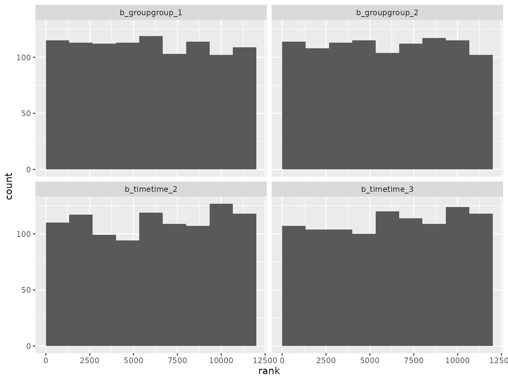 Log-scale standard deviation parameter ranks:
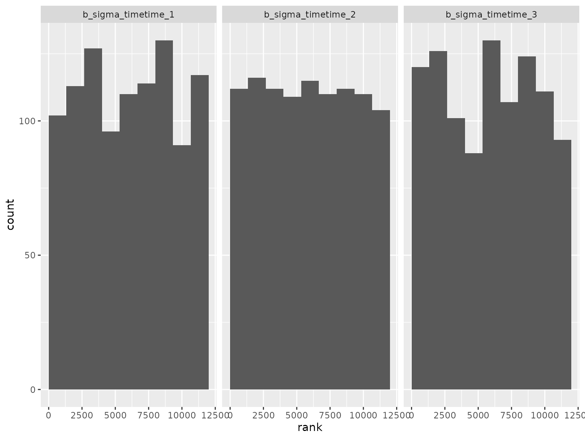
Correlation parameter ranks:
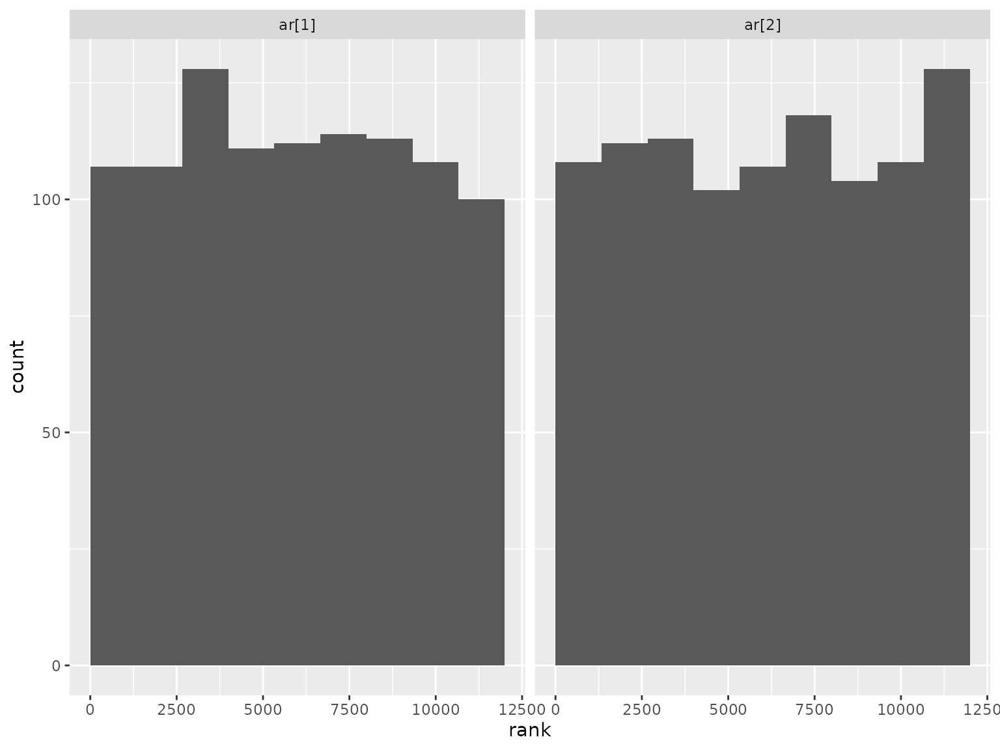
Moving average scenario
This scenario is the same as above, but it uses a moving average correlation structure with order 2. Model formula:
#> response ~ 0 + group + time + ma(time = time, gr = patient, q = 2L, cov = FALSE)
#> sigma ~ 0 + timeThe prior was randomly generated and used for both simulation and analysis:
setup_prior(moving_average) |>
select(prior, class, coef, dpar) |>
as.data.frame()
#> prior class coef dpar
#> 2 normal(0.2003, 0.2999) b groupgroup_1
#> 3 normal(0.18, 2.6539) b groupgroup_2
#> 4 normal(0.057, 2.7014) b timetime_2
#> 5 normal(-0.0733, 0.9602) b timetime_3
#> 6 normal(0.2424, 2.9937) b timetime_4
#> 7 uniform(0.1, 0.9) ma
#> 9 normal(0.1172, 0.4649) b timetime_1 sigma
#> 10 normal(-0.0516, 0.3823) b timetime_2 sigma
#> 11 normal(0.1713, 2.6895) b timetime_3 sigma
#> 12 normal(-0.0965, 0.3201) b timetime_4 sigmaSBC checking rank statistics:
ranks_moving_average <- read_ranks("sbc/results/moving_average.fst")Fixed effect parameter ranks:
ranks_moving_average |>
filter(grepl("^b_", parameter)) |>
filter(!grepl("^b_sigma", parameter)) |>
plot_ranks()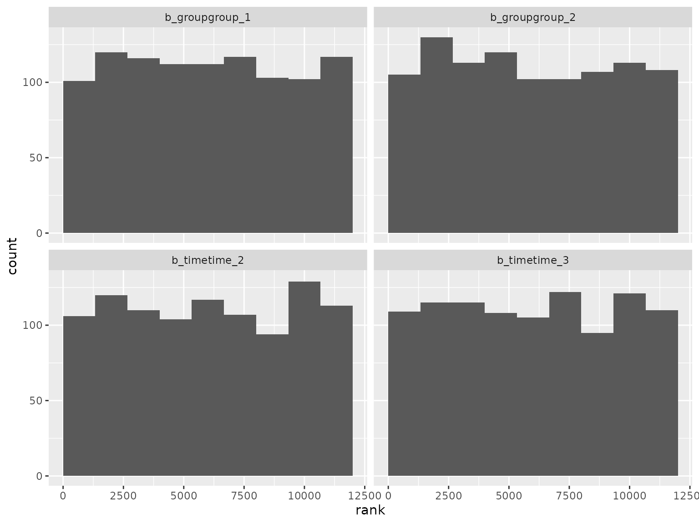 Log-scale standard deviation parameter ranks:

Correlation parameter ranks:
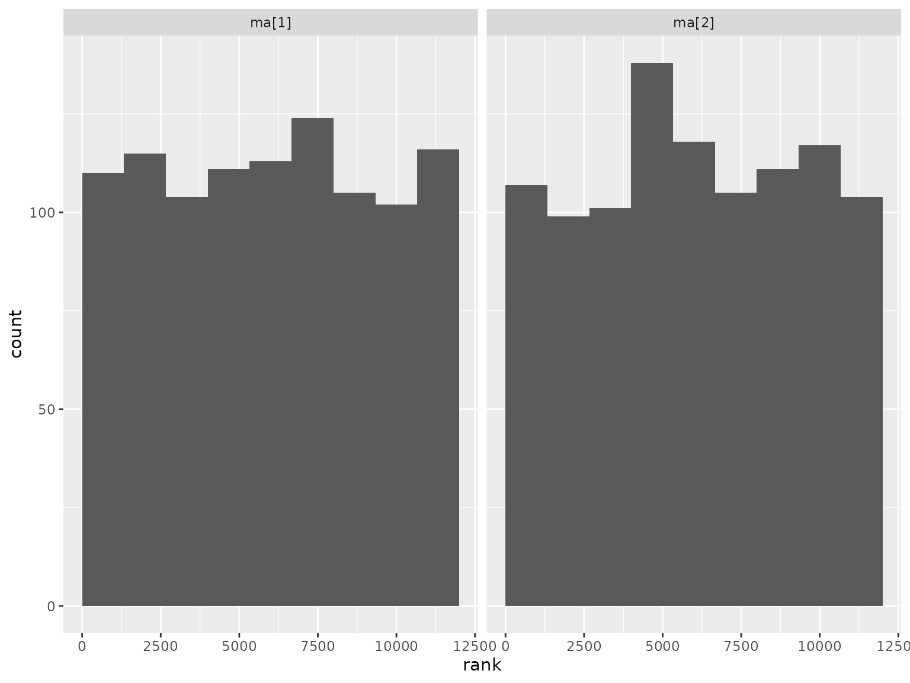
Compound symmetry scenario
This scenario is the same as above, but it uses a compound symmetry correlation structure. Model formula:
#> response ~ 0 + group + time + cosy(time = time, gr = patient)
#> sigma ~ 0 + timeThe prior was randomly generated and used for both simulation and analysis:
setup_prior(compound_symmetry) |>
select(prior, class, coef, dpar) |>
as.data.frame()
#> prior class coef dpar
#> 2 normal(-0.1482, 1.6958) b groupgroup_1
#> 3 normal(0.0688, 0.4554) b groupgroup_2
#> 4 normal(-0.0271, 1.1727) b timetime_2
#> 5 normal(-0.0439, 2.5765) b timetime_3
#> 6 normal(-0.1282, 1.0305) b timetime_4
#> 7 uniform(0.1, 0.9) cosy
#> 9 normal(0.2012, 0.7729) b timetime_1 sigma
#> 10 normal(-0.0137, 0.3341) b timetime_2 sigma
#> 11 normal(0.0819, 1.9446) b timetime_3 sigma
#> 12 normal(-0.1519, 1.0543) b timetime_4 sigmaSBC checking rank statistics:
ranks_compound_symmetry <- read_ranks("sbc/results/compound_symmetry.fst")Fixed effect parameter ranks:
ranks_compound_symmetry |>
filter(grepl("^b_", parameter)) |>
filter(!grepl("^b_sigma", parameter)) |>
plot_ranks()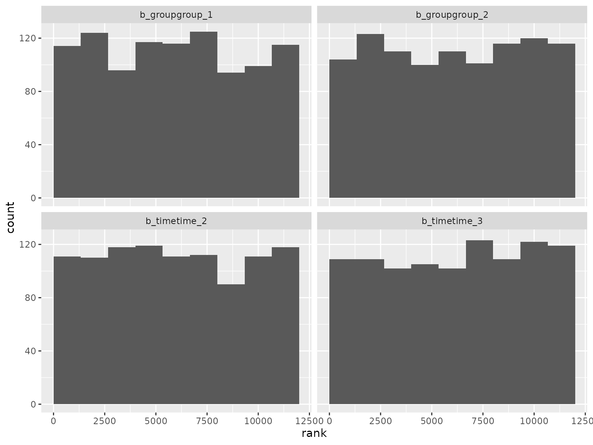 Log-scale standard deviation parameter ranks:
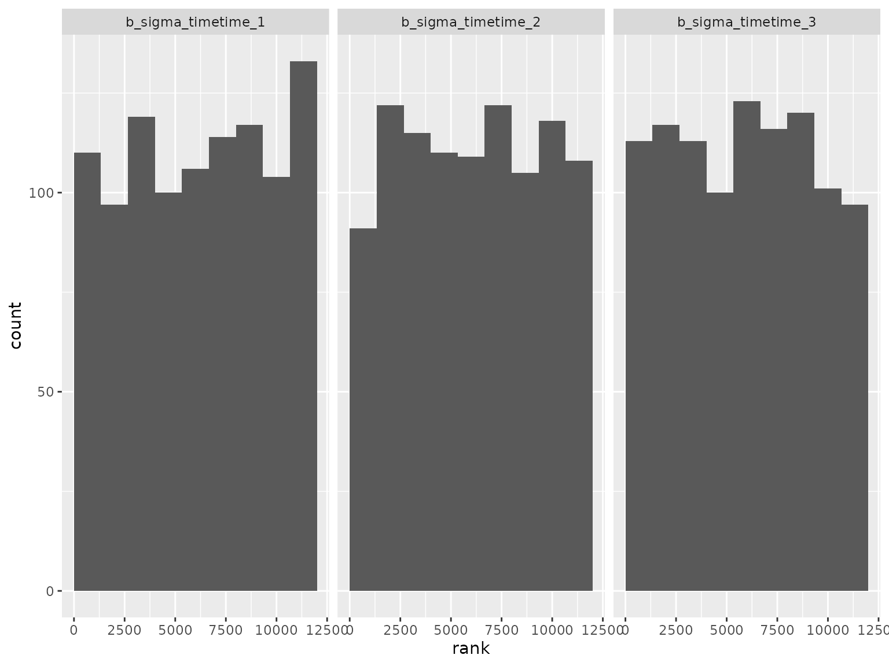
Correlation parameter ranks:
ranks_compound_symmetry |>
filter(parameter == "cosy") |>
plot_ranks()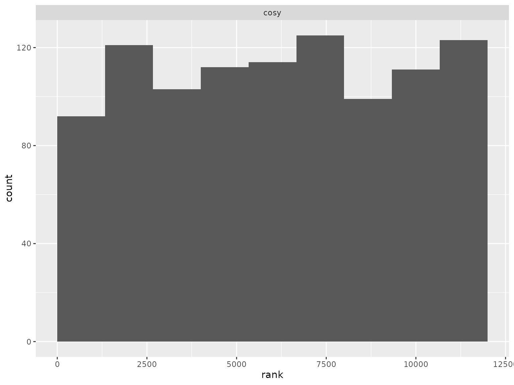
Diagonal scenario
This scenario is the same as above, but it uses a diagonal correlation structure (independent time points within patients). Model formula:
#> response ~ 0 + group + time
#> sigma ~ group + group:time + timeThe prior was randomly generated and used for both simulation and analysis:
setup_prior(diagonal) |>
select(prior, class, coef, dpar) |>
as.data.frame()
#> prior class coef dpar
#> 2 normal(0.1583, 1.5648) b groupgroup_1
#> 3 normal(0.0025, 1.3794) b groupgroup_2
#> 4 normal(-0.1174, 2.6911) b timetime_2
#> 5 normal(0.2088, 1.5977) b timetime_3
#> 7 normal(-0.0256, 0.7951) b groupgroup_2 sigma
#> 8 normal(-0.0922, 0.6475) b groupgroup_2:timetime_2 sigma
#> 9 normal(-0.2232, 0.6214) b groupgroup_2:timetime_3 sigma
#> 10 normal(-0.0399, 0.934) b timetime_2 sigma
#> 11 normal(0.1307, 2.6419) b timetime_3 sigma
#> 12 normal(-0.047, 2.4919) Intercept sigmaSBC checking rank statistics:
ranks_diagonal <- read_ranks("sbc/results/diagonal.fst")Fixed effect parameter ranks:
ranks_diagonal |>
filter(grepl("^b_", parameter)) |>
filter(!grepl("^b_sigma", parameter)) |>
plot_ranks()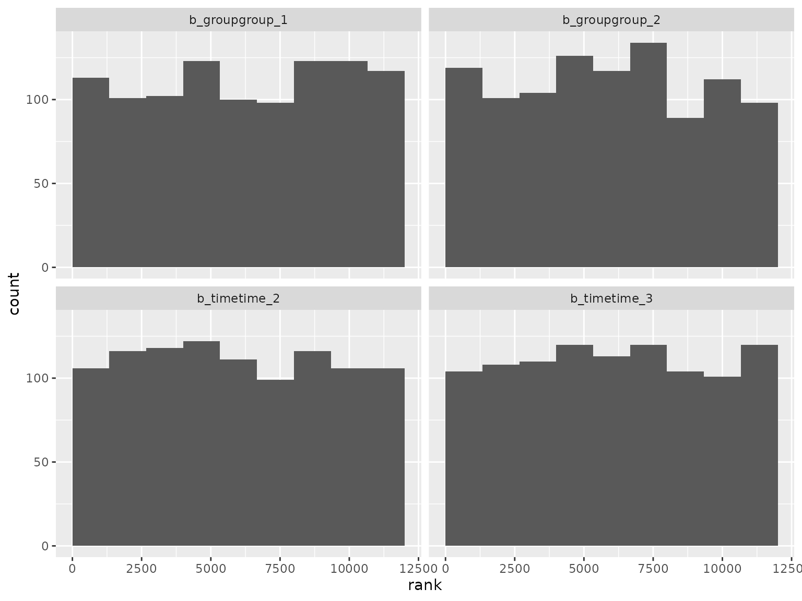 Log-scale standard deviation parameter ranks:
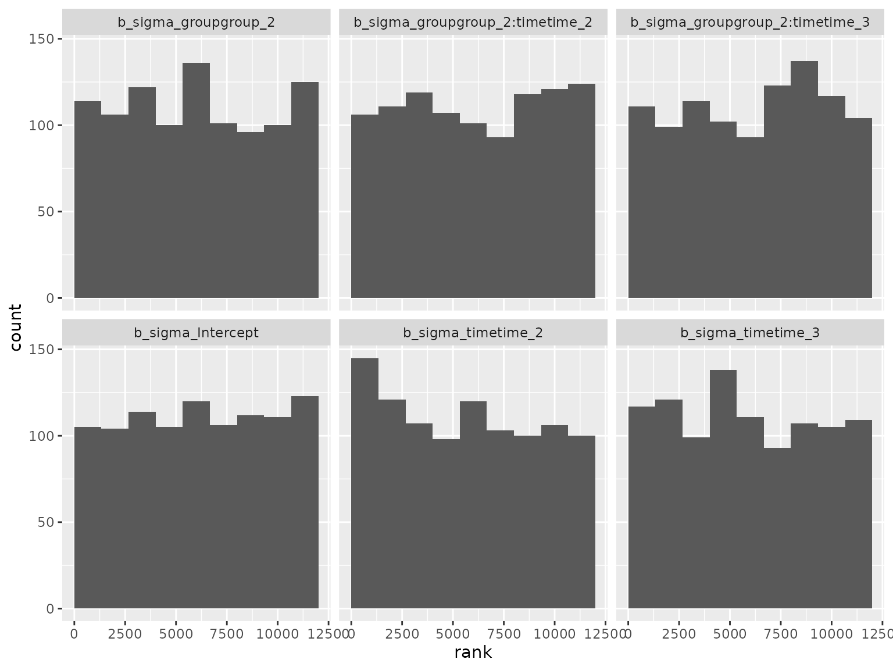